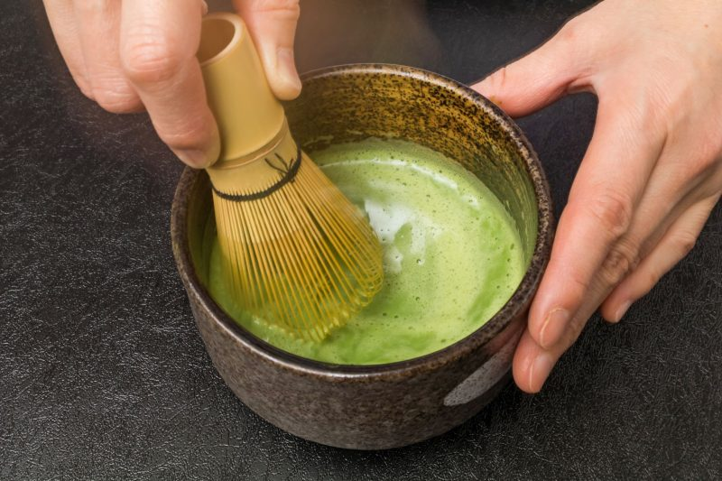
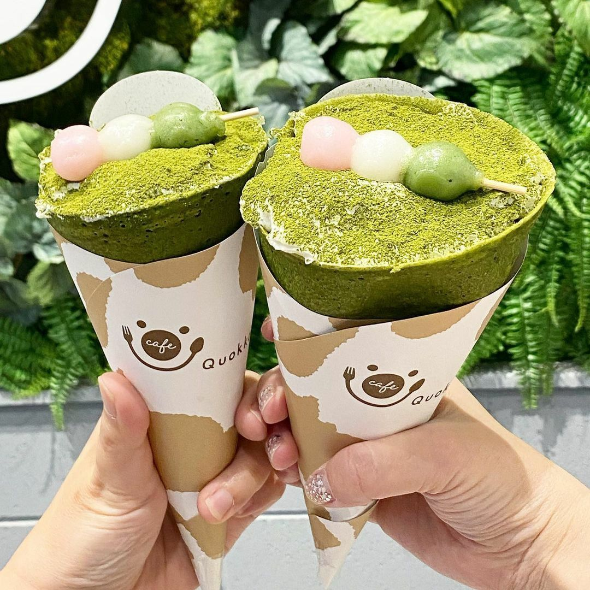

Art of Traditional Tea Ceremony
Tea Ceremony is not only a cultural with rules that's made for task and tradition, it's also
see's as a Form of Art, which performed in a strict rules of sophisticated movement and respected
by the successor.
Next to 2 classical arts in Japanese Breakthrough are Kado Flower Arranging and Kodo
Incense Appreciation, Tea Ceremony are claimed to be the 3rd of Classical Arts since
the tea are consumed for more than a millennium of years.
Modern and Latest form
In modern culinary innovation, since matcha became rapidly growth in beverages and desserts, it's profile flavor, color and healthy benefit became increasingly favorite globally that influence others and allowing Matcha to blend the ancient tradition with modern culinary creations to satisfy modern taste and lifestye .Food industry constantly produce new products that leads to great adaptations from Tradition Tea Ceremony to Global Culinary Ingredients which improves sweetness, complex in savory dishes and health values. In Closure, Matcha innovation of tradition and modern has sustained in modern culture for others embrace its benefits by making it daily part of lifestyle.

Matcha Production is also a form of Art, how they processed, shade including harvesting them. Below is "How Matcha Are processed into a grounded powder".

The tea leaves are covered by bamboo mats or rice straws stack on top, Which covers and protect the leaves from direct sunlight for 2-6 weeks.
Then, will either get handpicked manually or machine. Although handpicked will produce high quality for varities of reasons.
Next, Steaming's part of the process as their responsibility for preventing oxidation in tea leaves. Resulting more health benefits and proper taste.
Finally grind tea leaves to a fine, soft powder texture and consistencies 'Ground Tea'. Pack tightly and keep in storage until its ready for shipping.
They, checke for its quality by de-veining and de-stemmed to make sure it's only high quality leaves are grounded to Matcha.